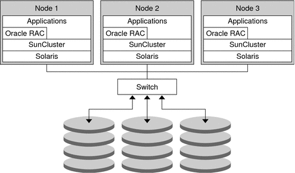

|
|||
|
1. Getting Started With Solaris Volume Manager 2. Storage Management Concepts 3. Solaris Volume Manager Overview 4. Solaris Volume Manager for Sun Cluster (Overview) Solaris Volume Manager for Sun Cluster Configuration RAID-1 (Mirror) Volumes in Multi-Owner Disk Sets 5. Configuring and Using Solaris Volume Manager (Scenario) 8. RAID-0 (Stripe and Concatenation) Volumes (Overview) 9. RAID-0 (Stripe and Concatenation) Volumes (Tasks) 10. RAID-1 (Mirror) Volumes (Overview) 11. RAID-1 (Mirror) Volumes (Tasks) 12. Soft Partitions (Overview) 16. Hot Spare Pools (Overview) 20. Maintaining Solaris Volume Manager (Tasks) 21. Best Practices for Solaris Volume Manager 22. Top-Down Volume Creation (Overview) 23. Top-Down Volume Creation (Tasks) 24. Monitoring and Error Reporting (Tasks) 25. Troubleshooting Solaris Volume Manager (Tasks) A. Important Solaris Volume Manager Files B. Solaris Volume Manager Quick Reference |
Introduction to Solaris Volume Manager for Sun ClusterStarting with the Solaris 9 9/04 release, Solaris Volume Manager can manage storage in a Sun Cluster environment using multi-owner disk sets. Multi-owner disk sets allow multiple nodes to share ownership of a disk set and to simultaneously write to the shared disks. Previously, shared disk sets were visible from all participating hosts in the disk set, but only one host could access it at a time. Multi-owner disk sets work with Sun Cluster and with applications such as Oracle Real Application Clusters. Multi-owner disk sets and Solaris Volume Manager shared disk sets can coexist on the same node. However, moving disk sets between the two configurations is not supported. Note - Solaris Volume Manager for Sun Cluster device id support for multi-owner disk sets is not available. Therefore, importing multi-owner disk sets from one system to another is not supported at this time. Solaris Volume Manager for Sun Cluster creates the same components that you can create with Solaris Volume Manager, including stripes, concatenations, mirrors, soft partitions, and hot spares. Solaris Volume Manager for Sun Cluster does not support RAID-5 volumes and transactional volumes. The following figure shows the association between the software and the shared storage in a typical cluster configuration. Figure 4-1 Sample Cluster ConfigurationEach node has local storage as well as at least one path to shared storage. The multi-owner disk sets in the cluster are managed by Solaris Volume Manager for Sun Cluster, which is part of the Solaris Operating System (Solaris OS). Prerequisite: Required Software Components for Multi-Owner Disk Set FunctionalityTo use Solaris Volume Manager for Sun Cluster, the following software must be installed in addition to the Solaris OS:
Note - For information on setting up Sun Cluster and Oracle Real Application Clusters software, see Sun Cluster Software Installation Guide for Solaris OS and Sun Cluster Data Service for Oracle Real Application Clusters Guide for Solaris OS. |
||
|